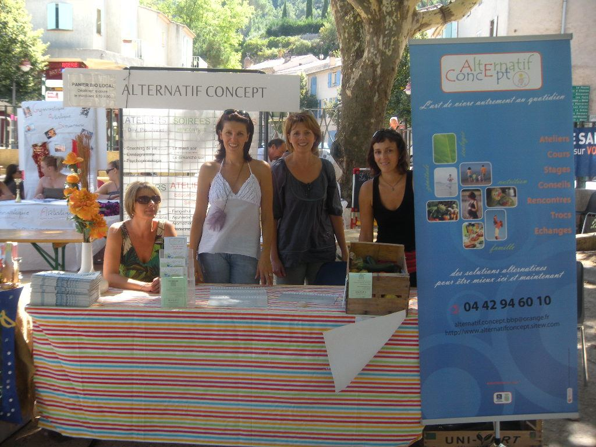
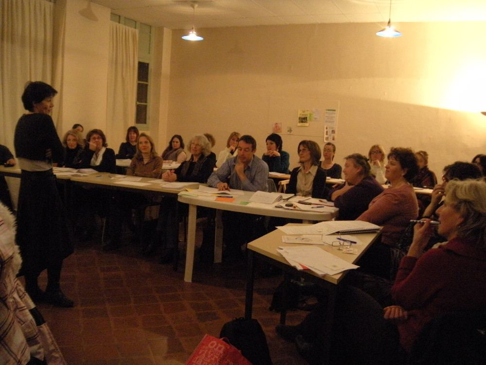
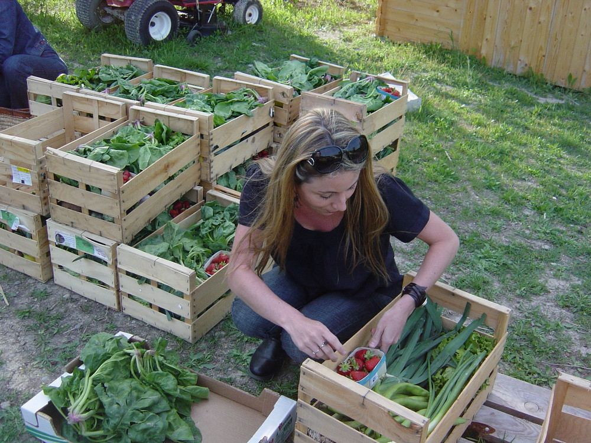

Béatrice Blanc Pétro
Présidente-fondatrice
Bénévole depuis le début. Voyages sonores, yoga somatique, marche nordique, cuisine sans gluten.
AccueilL’association
Qui sommes-nous ?Depuis 2005, Alternatif Concept transmet, partage et rassemble autour d’un même fil : mieux vivre ici et maintenant, pour soi et pour les autres.

Alternatif Concept (« AC ») a deux objectifs : informer sur les alternatives naturelles, respectueuses de l’individu et de la planète, d’éducation au bien-être ; et organiser et promouvoir toutes activités pratiques et culturelles.
L’association s’adresse à l’humain dans sa globalité. Par de petits ateliers découvertes, des cours, des dîners, des stages, des séjours ou des mini-conférences, elle permet de toucher du doigt différentes méthodes alternatives, de les comprendre et de s’en servir à bon escient, en famille et auprès de praticiens professionnels.
Chacune et chacun repart avec quelques outils en adéquation avec ses besoins du moment. Et si une vocation naît en chemin, d’autres écoles sont là pour approfondir !
En toute transparence : l’association n’a aucune appartenance religieuse, ni sectaire.


Béatrice Blanc Pétro, formée à la naturopathie depuis 1999, crée l’association après sa grossesse de 2001, avec l’envie de partager ce que l’on « ne nous dit pas toujours ».
AC organise la distribution hebdomadaire de paniers de fruits et légumes de producteurs bio locaux, sur le Cours des Héros. Les paniers se sont arrêtés quand le bio s’est largement développé autour du village.
« Simiane au naturel » : conférences, ateliers et stands organisés ensemble à Simiane-Collongue.
Yoga des enfants, yoga en famille, puis interventions dans les écoles de Simiane et Bouc-Bel-Air et le collège, pour les plus jeunes.
Une programmation vivante qui s’enrichit chaque saison, avec de nouvelles intervenantes et des séjours à thème.
Partager les informations qui nous ont aidés, avec simplicité, pour que chacun gagne en autonomie sur sa santé et son bien-être.
Une « bio & zen attitude » : alimentation saine, soutien aux agriculteurs bio, écologie du quotidien.
Des pratiques douces, sans performance ni jugement, qui invitent à l’écoute de son corps et de ses ressentis.
Soutien aux débutants, échanges de savoirs et de savoir-faire, dîners et rencontres : on avance mieux ensemble.
Ateliers de communication non violente et lien avec l’éducation bienveillante : la paix commence par soi.
Alternatif Concept vit au rythme du village : cours à la Maison des Associations, présence aux forums des associations, à la Fête de la nature et aux salons bio de la région.

Bénévole depuis le début. Voyages sonores, yoga somatique, marche nordique, cuisine sans gluten.
Hatha yoga, le vendredi matin : un yoga traditionnel, accessible à tous les corps.
Yin yoga restauratif et nidra, ateliers de yoga somatique, retraite à Essaouira.
Rigologie (yoga du rire), une fois par mois.
Secrétaire, trésorier·e… à renseigner par l’association.
Écrivez-nous ou appelez-nous : on vous explique tout, simplement. Un cours d’essai à 5 € (déduit d’un éventuel abonnement) permet de tester avant de s’engager.